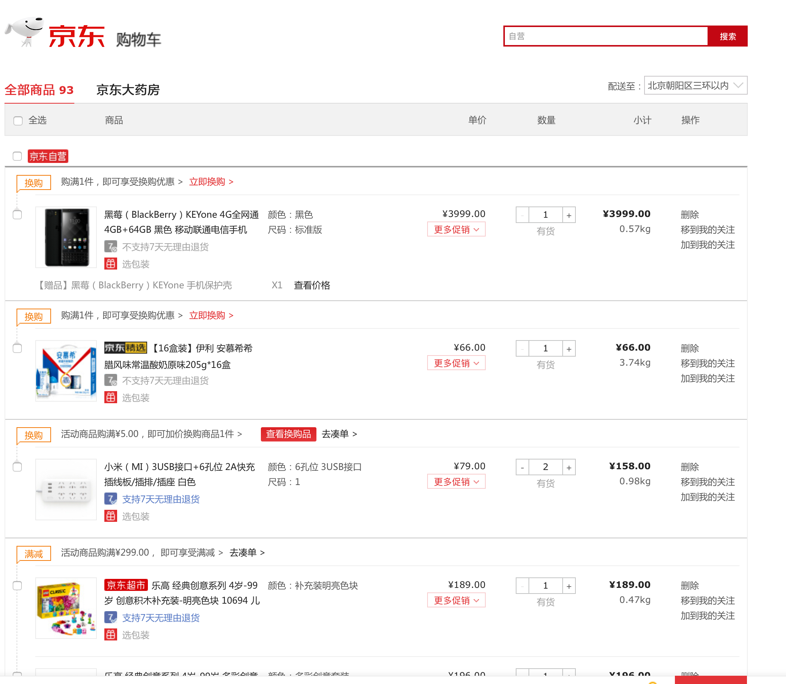
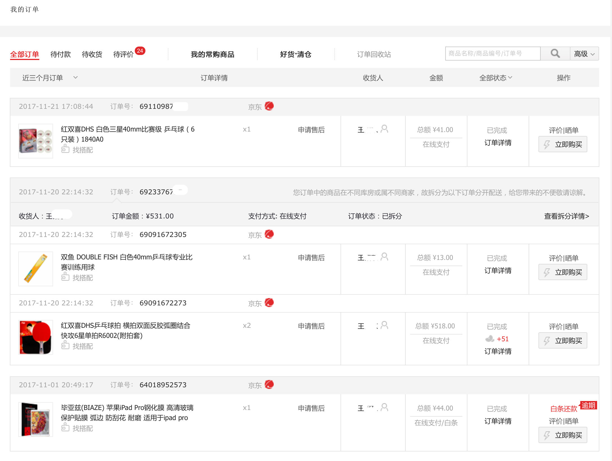
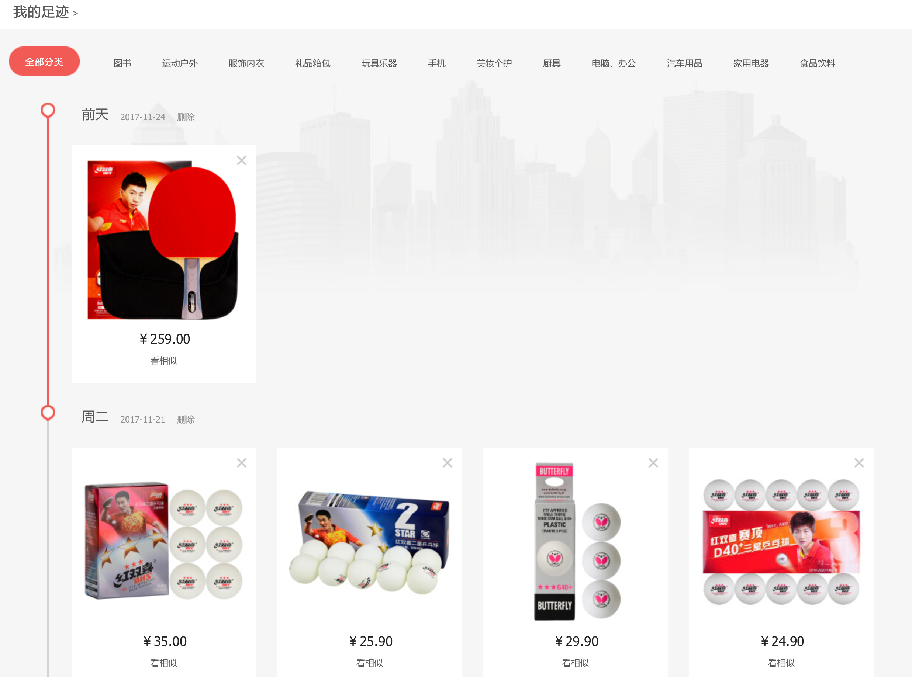
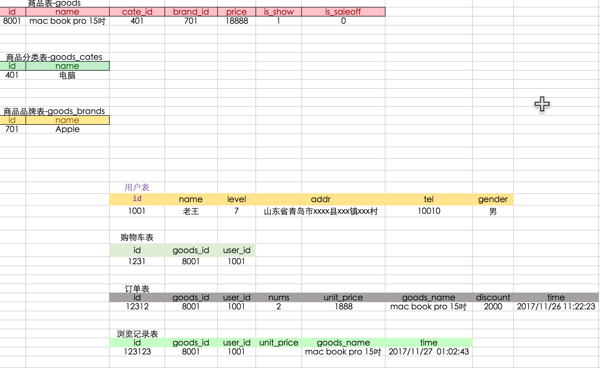
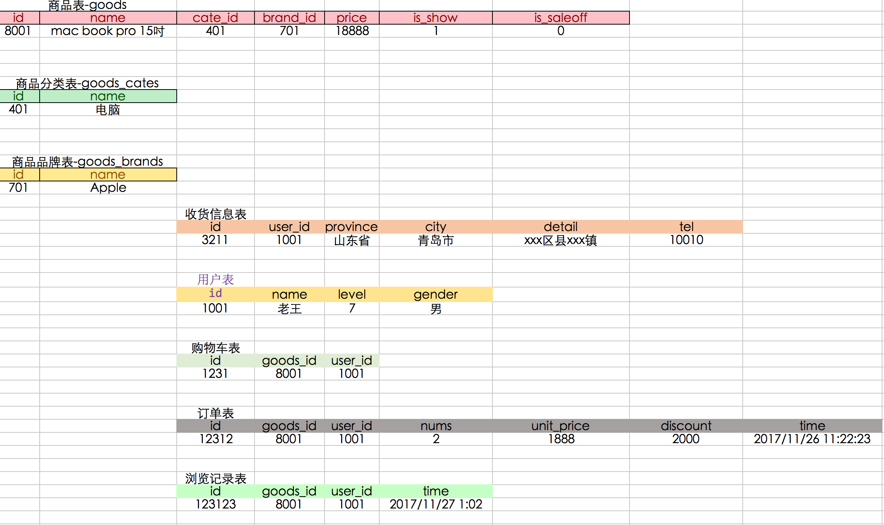
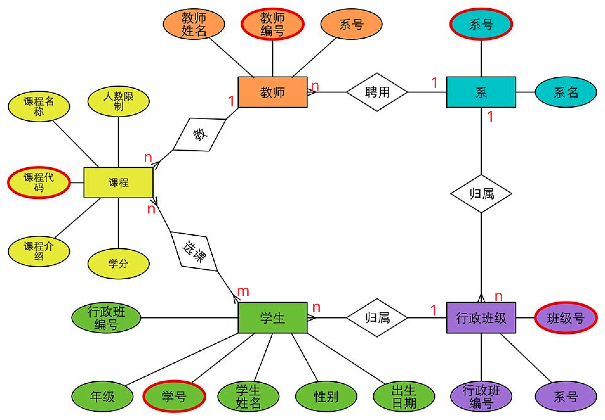

数据库的设计
1. 问题
前面的SQL练习，已经将原本一个数据表中的数据，拆分成了3张表，目的就是为了让具有一定独立性的数据单独成为一个独立的表，这样有利于管理以及数据的相关操作
那么，请大家想一个问题：接下来如果要设计电商系统剩余部分的数据表，例如用户表、购物车、订单表、浏览记录表，你会怎样做？
1.1 用户表
1.2 购物车表

1.3 订单表

1.4 浏览记录表

2. 如下方式哪个较好呢？
* 设计方案1

* 设计方案2

3. E-R图
E-R是“实体-联系”的简称。它是描述现实世界概念结构模型的有效方法。
是表示概念模型的一种方式
- 用矩形表示实体型，矩形框内写明实体名；
- 用椭圆表示实体的属性，并用无向边将其与相应的实体型连接起来；
- 用菱形表示实体型之间的联系，在菱形框内写明联系名，并用无向边分别与有关实体型连接起来，同时在无向边旁标上联系的类型（1:1,1:n或m:n）

- 实体A对实体B为1对1，则在表A或表B中创建一个字段，存储另一个表的主键值

- 实体A对实体B为1对多：在表B中创建一个字段，存储表A的主键值

- 实体A对实体B为多对多：新建一张表C，这个表只有两个字段，一个用于存储A的主键值，一个用于存储B的主键值

4. 三范式
第一范式
原子性，表的字段不可再拆分成更小的字段。
第二范式
在满足第一范式的基础上，非主键必须完全依赖主键，而不是仅仅依赖主键的一部分。
举个例子，美国销售军火的时候，对每一样武器，根据国家或地区的不同而给出不同的价格。建个表看看:
CREATE TABLE weapon_price
(
wp_id UNSIGNED INT NOT NULL AUTO_INCREMENT, -- 武器编号
cs_id UNSIGNED INT NOT NULL , -- 消费者 id
wp_price UNSIGNED INT NOT NULL, -- 武器价格, 根据武器买主的不同而不同
cs_name VARCHAR(40) NOT NULL -- 消费者的称呼，例如 菲律宾/韩国
);
weapon_price 用于描述武器的价格，价格根据(武器，消费者)的不同而不同。
对于此表 (wp_id,cs_id) 是其主键。其中 wp_price 是完全依赖于 (wp_id,cs_id) 的，而 cs_name 则只依赖于 cs_id ，即只依赖于主键的一部分。
这种情况导致的问题是什么呢？
- 增：造成冗余。cs_name 重复出现，如果有许多武器的买主都是韩国，那么 cs_name 就会在这张表中出现很多次，造成浪费。
- 删：无
- 改：假如"菲律宾"后来改名了，那么数据库管理者不得不把表中所有 相关的 cs_name 全都改一遍。
- 查：无
如何应对呢？
- 把 cs_name 挪到别的表里，可以建一个 consumer 表，其中含 (cs_id,cs_name) 两个字段。
第三范式
满足第二范式并且每个字段都不间接依赖于主键列。
CREATE TABLE province
(
pr_id UNSIGNED INT NOT NULL AUTO_INCREMENT, -- 主键
pr_name VARCHAR(20) NOT NULL, -- 省份名, 完全依赖于主键, pr_id 定了, pr_name 就定了
PRIMARY KEY(pr_id)
);
CREATE TABLE city
(
ct_id UNSIGNED INT NOT NULL AUTO_INCREMENT, -- 主键
ct_name VARCHAR(20) NOT NULL, -- 完全依赖于主键，ct_id 定了，ct_name 就定了
pr_id UNSIGNED INT NOT NULL , -- 完全依赖于主键，ct_id 定了，就可以确定 pr_id
pr_name VARCHAR(20) NOT NULL, -- 完全依赖于主键，ct_id 定了，就可以确定 pr_name
PRIMARY KEY(ct_id),
FOREIGN KEY(pr_id) REFERENCES province(pr_id) ON DELETE CASCADE
);
上述的这两张表都满足第二范式，不过，注意到 city 表中的 pr_name 字段虽然完全依赖于 ct_id , 但是它是通过 pr_id 传递依赖于 ct_id 的。
传递依赖的坏处：
- 增：明显 pr_name 出现冗余。
- 删：无
- 改：改动 province 表的 pr_name 字段，也要同时修改 city 表中的 pr_name 。一不小心就出问题。
- 查：无
结语
平时小打小闹似乎用不上范式，因为设计出来的表总是自然而然地满足范式的要求。不过，对于范式，还是"理解"万岁吧~